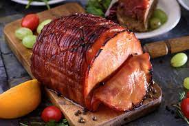

Rum Ham

Rum ham is a sweet-salty sensation that’s super simple to make. Even if you haven’t seen It’s Always Sunny in Philadelphia, you should learn how to make rum ham solely for the impressive look and incredible taste. To clear the air, yes, there’s alcohol—but no, this ham won’t get you drunk. With its long bake time, most of the alcohol cooks off, so you’re left with the pure sweet and spiced flavor of the Caribbean spirit. First, let’s gather the ingredients.
Ingredients
- One 8-10 pound fully cooked, bone-in ham
- 3/4 cup rum
- 2 cups packed brown sugar
- 1 tablespoon ground mustard
- 1 tablespoon orange marmalade
- 1/8 teaspoon cinnamon
Steps
- Get your roasting pan ready by lining it with foil. Then place the bone-in ham on a rack in the pan. Score the surface of the ham, making diamond shapes approximately 1/2 inch deep. Scoring helps the meat absorb the star of the recipe—the glaze. Brush the scored ham with 2 tablespoons of rum, then bake, uncovered, at 325° for 2 hours.
- All you have to do is mix and spoon! In a small bowl, combine the rest of the ingredients, including the remaining rum. Once the ham has baked for 2 hours, remove it from the oven and spoon the glaze over ham.
- Return the ham to the oven and bake for an additional 30 minutes (or until a thermometer reads 140°).
- Serve and slice.